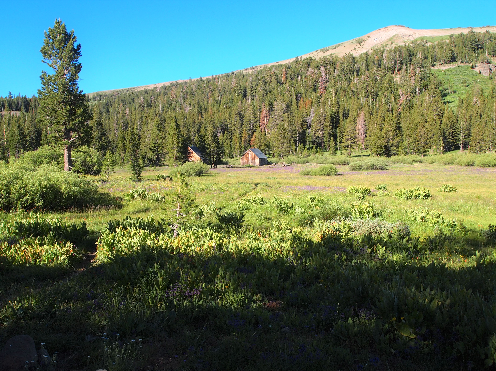

California Heritage Trout Challenge
California is my home state and the place where I fish learned to rod-and-reel fish. I made semi-annual camping trips with my family into the Sierra, and sometimes caught fish, which we almost always kept and ate. Some of the best fishing experiences I ever had were in the Kennedy Meadows of the Southern Sierra, fishing the South Fork of the Kern. I also had family in the Kernville area, and fished the Kern a number of times growing up, though I can’t remember having much success on that river.
I am just beginning my California Heritage Trout Challenege, and I’m excited to make some serious progress this coming summer. Because California has high state capacity and a professionalized legislature, the California Department of Fish and Wildlife has published a very fancy, glossy brochure that discusses each fish and where to find them. The brochure somewhat confusingly lists twelve total “heritage” trout that exist or existed in California, though anglers only have to catch six to complete the challenge. One of those trout, bull trout, has been extirpated from the state. That leaves eleven.
A second fish, the Paiute Trout, has a native range comprising a small set of creeks that are currently closed to fishing because the fish is listed under the Endangered Species Act. While anglers can and do catch the fish in other drainages to which they’ve been transported (apparently in the White Mountains), these fish do not qualify for the Heritage Trout Challenge because they are outside their native drainage. The brochure teases that it is possible to catch a Paiute below the closure as some fish apparently wash downstream. I’ve done a lot of research and seen others hint at this possibility, but I don’t know if it’s realistic or not. That seemingly leaves ten total fish.
Even more confusingly, the brochure lists a second recognition level, that of “Master Angler”, if one catches all eleven species, but that includes the Paiute cutthroat. My impression is that the brochure was published prior to the closure of the Silver Creek drainage, home of the Pauite, so I’m not sure it’s even possible to complete the Master Angler level. References to Master Angler also seem to have been completely scrubbed from any current online sources. My approach will be to catch as many fish as I can to complete the regular challenge and work toward the Master Angler title. Then if I get close, I’ll look into whether it’s even possible to catch a Pauite downstream of the closure. In other words, I’d like to complete the Master Angler level, but I’ll save solving the problem of the Pauite for later. While I expect to finish the regular challenge level this year, I don’t believe I’ll be able to catch all ten in 2023. This puts off the Pauite problem for at least another year. Who knows, maybe Silver Creek will open to fishing in 2024.
Even though I’ve caught Coastal Rainbows, Kern River Rainbows, and Golden Trout as a child, I’m treating this challenge as a fresh start. I’m not even sure I could locate pictures of me with any of these fish. I was able to catch one fish in 2022, and plan on catching at least five more in the summer of 2023 to complete the first level of the challenge.
Lahontan Cutthroat–Upper Truckee River
The Upper Truckee headwaters are in Meiss Meadows just over a pass from Highway 88 outside of Tahoe. It was a strange experience returning here as I did a backpacking trip to this same area with my father as a teenager in 1998. On that trip, we were trying to get to Showers Lake, and started hiking south from Highway 50. It was a big snow year and we quickly realized we couldn’t make it, so we drove to 88 and tried to hike north. We were blocked by snow again, and backtracked to Meiss Lake and camped there. It was shocking to see how much smaller the lake was in 2022 as compared to 1998.
Meiss Meadow is a lovely area that’s an easy hike from the highway. The trail crosses the headwaters of the Truckee, but the river here is a little indistinct as it flows through the meadows and picks up water from Meiss Lake and a number of small ponds. We hiked past the river crossing, then ventured off trail down to where I thought the river would be a little narrower and larger. It was still pretty small and somewhat brushy, but there were lots of holes to cast into, and I could immediately see a lot of fish.
 The old Meiss Ranch.
It didn’t take long to catch a few Lahontans, and my first qualifying fish for the California Heritage Trout Challenge was in the books. It was a little disconcerting to see how low the water was, especially because it was only mid-July, not that late in the season. It was also disconcerting to see damage from the Caldor Fire at various points along Highway 88 up the canyon. The significant rain and snowfall in the winter of 23 will delay the summer fishing season a bit, but I’m hoping it will temporarily solve some of the water problems in the Sierra.
 Low water on the Upper Truckee in mid-July. Caught a deer unawares.
Low water on the Upper Truckee in mid-July. Caught a deer unawares.
More fish coming, summer 2023.